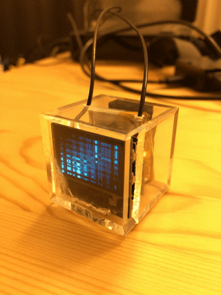
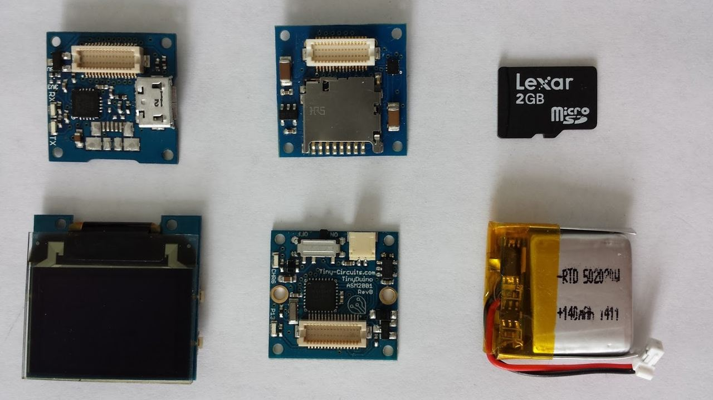

MICROSD TINYSHIELDを使ってTinyScreenにGIFを表示する

TinyScreenというとても小さなArduino互換のディスプレイがあるのだが、今回はこれにGIF画像を表示する方法をメモしておく。
TinyScreenとは
冒頭でも述べたが、親指サイズの非常に小さなArduino互換デバイスである。
詳しくは、公式サイトをみると良い。
MICROSD TINYSHIELDを使ってGIFを表示する

GIFの表示には、TinyScreen本体に加えてMICROSD TINYSHIELDと
いうモジュールが必要になる。
こちらは、文字通りMicroSD内のファイルを読み込めるようにするモジュールで、今回はこの中に保存されているGIFを表示する方法を紹介する。
紹介といっても、すでにコードと解説はこちらに載っているので、重複する部分も多々あるがもう少し細かく説明しておこうと思う。
Gif -> TSVファイルへの変換
TSVとはデータとデータの間がタブで区切られているテキストファイル。
表示するGIF画像はこのTSV形式に変換しておかないとプログラムで表示できないので、ここではその変換を行う。
準備
こちらからTSVconverter.pyファイルをDLする。
GIFファイルをTSVconverter.pyファイルと同階層においておく。
変換
TSVconverter.pyファイルをpythonコマンドで実行すればTSVファイルが生成される。
$ python TSVconverter.py
エラーが出た時の対応
初めてpython TSVconverter.pyを実行する場合、おそらくこんなエラーが出る。
Traceback (most recent call last):
File "TSVconverter.py", line 2, in <module>
from PIL import Image
ImportError: No module named PIL
PILがインストールされてないらしい。
PIL（pillow）のインストール
まずは、pipをインストール。
$ curl -kL https://bootstrap.pypa.io/get-pip.py | python
※Permission denied: '/Library/Python/2.7/site-packages/pip'エラーが出るかもなのでsudoつける必要あるかも
$ curl -kL https://bootstrap.pypa.io/get-pip.py | sudo python
実行
$ ./gradlew lint && android-resource-remover --xml app/build/outputs/lint-results.xml
次に、PILのforkプロジェクトであるpillowをインストール
$ pip install pillow
パーミッションエラーが出たらsudoで実行。
正常にインストールされてることを確認
$ pip list
...
Pillow (3.2.0) // インストールされてるね
...
これでpython TSVconverter.pyが正常に動作するようになる。
参考：http://otiai10.hatenablog.com/entry/2013/12/19/154149````````
実行
こちらのプログラムをcodebenderから実行するとプログラムが書き込まれてフォルダの選択画面が表示されるはず。。
あとは、ディスプレイ横のボタンでメニューを選べばGIFを表示できると思う。
余談
完成品をネックレスにするためにケースを探したのだが、それには東急ハンズのプラスチックキューブ 角 クリア 36mmがちょうどよかった。
ただ、MicroSDがささってるとちゃんと収まらなかったり、横のボタンが押せなかったりするので、そこは切ったり穴をあけたりと加工した。
なかなか良い感じに仕上がったので満足しているが、やはりずっとGIFを表示していると電池の消費が激しいね。